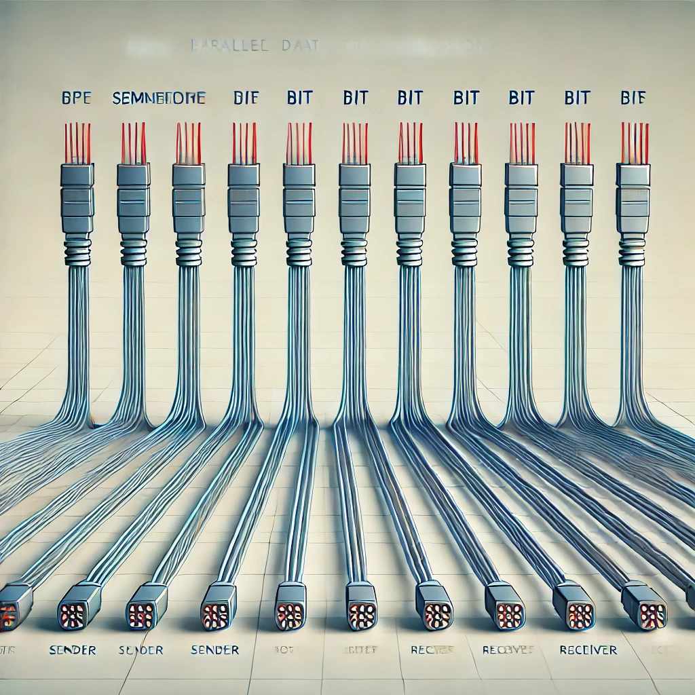

ASCII Values
A =
Decimal :65
Binary : 1000001
Octal : 101
Hexadecimal : 41
a =
Decimal : 97
Binary : 1100001
Octal : 141
Hexadecimal : 61
4 =
Decimal : 52
Binary : 110100
Octal : 64
Hexadecimal : 34
7 =
Decimal : 55
Binary : 110111
Octal : 67
Hexadecimal : 37
# =
Decimal : 35
Binary : 100011
Octal : 43
Hexadecimal : 23
Parallel Transmission
Serial Transmission
Asynchronous Serial Transmission
Synchronous Serial Transmission
Isochronous Transmission
প্যারালাল ডাটা ট্রান্সমিশন মেথডে কি আসলেই ৮টা তার লাগে নাকি একটা তার এর মধ্যে ৮টা স্তরে যায় ?

প্যারালাল ডাটা ট্রান্সমিশনের বৈশিষ্ট্য:
ডাটা একাধিক চ্যানেলে একসাথে পাঠানো হয়।
ট্রান্সমিশন গতি দ্রুত।
স্বল্প দূরত্বের জন্য কার্যকর।
ব্যবহার:
কম্পিউটার প্রিন্টার সংযোগে।
RAM ও প্রসেসরের মধ্যে ডাটা আদান-প্রদানে।
সুবিধা:
দ্রুত ডাটা ট্রান্সমিশন।
স্বল্প সময়ে বড় আকারের ডাটা পাঠানো যায়।
অসুবিধা:
দীর্ঘ দূরত্বে সিগন্যাল বিভ্রাট।
বেশি চ্যানেল ব্যবহারের কারণে ব্যয় বেশি।
এসিনক্রোনাস ডাটা ট্রান্সমিশনের প্রধান বৈশিষ্ট্য:
১. ক্যারেক্টার হিসেবে যায়: ডেটা ক্যারেক্টার আকারে প্রেরিত হয়, যেমন একটি অক্ষর বা সংখ্যা।
২. স্টার্ট বিট, স্টপ বিট এবং প্যারিটি বিট ব্যবহার হয়: ডেটা ট্রান্সফার করার সময় স্টার্ট বিট, স্টপ বিট এবং প্রয়োজনে প্যারিটি বিট ব্যবহৃত হয়।
৩. টাইম ফ্রেম থাকে না: ডেটা নির্দিষ্ট সময় ফ্রেমে প্রেরিত হয় না, সময়ের উপর নির্ভরশীল নয়।
৪. প্রাইমারি স্টোরেজ দরকার হয় না: ডেটা প্রেরণ করতে কোনো অতিরিক্ত স্টোরেজ প্রয়োজন হয় না, কারণ এটি স্বতন্ত্রভাবে প্রেরিত হয়।
৫. অল্প দূরত্বের ক্ষেত্রে ব্যবহার হয়: এটি সাধারণত কম দূরত্বে, যেমন কম্পিউটার এবং কীবোর্ড বা মাউসের মধ্যে ব্যবহৃত হয়।
৬. গতি কম হয় তুলনামূলক: অন্যান্য সিস্টেমের তুলনায় এসিনক্রনাস ট্রান্সমিশনের গতি তুলনামূলকভাবে কম।
৭. রিসিভার শুধু একচুয়াল বিট গ্রহণ করে: রিসিভার কেবলমাত্র ডেটার আসল বিটগুলো গ্রহণ করে, স্টার্ট বিট, স্টপ বিট, এবং প্যারিটি বিট গ্রহণ করে না।
৮. স্টার্ট বিট এবং স্টপ বিট পাঠানো হয় যাতে কেরেক্টারকে নির্দিষ্ট করে চেনা যায়: স্টার্ট বিট এবং স্টপ বিট দিয়ে নিশ্চিত করা হয় যে কিসে শুরু এবং শেষ হয়েছে, যা ক্যারেক্টার সনাক্ত করতে সাহায্য করে।
৯. একটি উদাহরণ: কীবোর্ডের আউটপুট পাঠানো যখন আপনি একটি বাটন প্রেস করেন, তখন এসিনক্রনাস ডাটা ট্রান্সমিশন ব্যবহার করা হয়।
এই বৈশিষ্ট্যগুলো এসিনক্রনাস ডাটা ট্রান্সমিশনের কাজের প্রক্রিয়াকে সহজ করে এবং এটি কম দূরত্বের কম্পিউনিকেশন ব্যবস্থায় কার্যকরী।
বড় হাতের "A" (ASCII 65):
Start Bit: 0
Data Bit : 01000001 (৮ বিট)
Parity Bit : 0 (যেহেতু 1-এর সংখ্যা 1, তাই ইভেন প্যারিটি বজায় রাখতে প্যারিটি বিট 0 হবে)
Stop Bit : 1 (1 বিট)
এটা হবে:
0 01000001 0 1
প্যারিটি বিট হলো একটি অতিরিক্ত বিট যা ডেটার সঠিকতা যাচাই করতে ব্যবহৃত হয়। এটি ডেটার সাথে যোগ করা হয় যাতে ডেটাতে ত্রুটি আছে কিনা তা চেক করা যায়। প্যারিটি বিট দুটি ধরনের হতে পারে:
ইভেন প্যারিটি: এখানে ১-এর সংখ্যা সোজা (even) রাখতে প্যারিটি বিট যোগ করা হয়।
অড প্যারিটি: এখানে ১-এর সংখ্যা বিজোড় (odd) রাখতে প্যারিটি বিট যোগ করা হয়।
এটি শুধুমাত্র ত্রুটি সনাক্তকরণ করতে সাহায্য করে, কিন্তু ত্রুটি সংশোধন করতে পারে না।
A parity bit is an additional bit added to data to ensure its accuracy. It is used to detect errors in data transmission or storage.
Parity Bit
সিনক্রোনাস ডাটা ট্রান্সমিশনের বৈশিষ্ট্য:
নিরবচ্ছিন্ন ডাটা স্ট্রিম পাঠানোর জন্য একটি সাধারণ ক্লক সিগন্যালের সাথে সিঙ্ক্রোনাইজ করা হয়।
স্টার্ট ও স্টপ বিট নেই, ডাটা ব্লকের আকারে পাঠানো হয়।
উচ্চ গতি এবং কার্যকর বড় ডাটা ট্রান্সমিশনের জন্য উপযোগী।
ব্যবহার:
উচ্চ গতির নেটওয়ার্কে (যেমন: ইথারনেট)।
বড় ডাটা ট্রান্সমিশনের জন্য সার্ভার ও মেইনফ্রেম কম্পিউটারের মধ্যে।
সুবিধা:
উচ্চ গতিতে ডাটা ট্রান্সমিশন সম্ভব।
স্টার্ট ও স্টপ বিটের প্রয়োজন না থাকায় কার্যকর এবং কম ওভারহেড।
অসুবিধা:
সিঙ্ক্রোনাইজেশন প্রক্রিয়া জটিল।
ছোট দূরত্বে ব্যবহারে খরচ বেশি ও বেশি রিসোর্স লাগে।
আইসোক্রোনাস ডাটা ট্রান্সমিশনের বৈশিষ্ট্য:
ডাটা নির্দিষ্ট এবং নিরবিচ্ছিন্ন টাইম ইন্টারভালে পাঠানো হয়।
নির্দিষ্ট ব্যান্ডউইথ সংরক্ষণ করা হয়, যাতে ডাটা সময়মতো পৌঁছায়।
ডাটা লসের সম্ভাবনা মেনে নিয়ে গতি ও ধারাবাহিকতা নিশ্চিত করা হয়।
ব্যবহার:
লাইভ ভিডিও স্ট্রিমিং এবং ভিডিও কনফারেন্সিং।
অডিও ও ভিডিও প্লেব্যাক ডিভাইসে (যেমন: USB অডিও ডিভাইস)।
সুবিধা:
সময়মতো ডাটা পৌঁছানোর নিশ্চয়তা থাকে, যা রিয়েল-টাইম অ্যাপ্লিকেশনের জন্য গুরুত্বপূর্ণ।
ধারাবাহিক ডাটা ট্রান্সমিশন, তাই ভিডিও ও অডিওর ক্ষেত্রে ল্যাগ কম হয়।
অসুবিধা:
ডাটা লসের সম্ভাবনা আছে, কারণ পুনরায় ট্রান্সমিশন হয় না।
নির্দিষ্ট ব্যান্ডউইথ বরাদ্দ করায় নেটওয়ার্কের অন্যান্য ডাটার জন্য জায়গা কমে যেতে পারে।